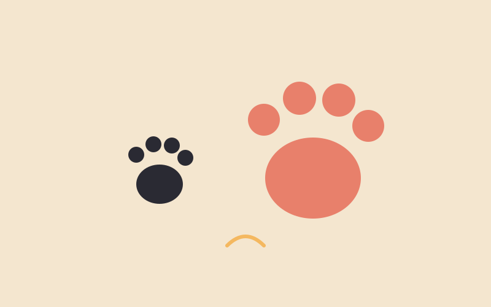
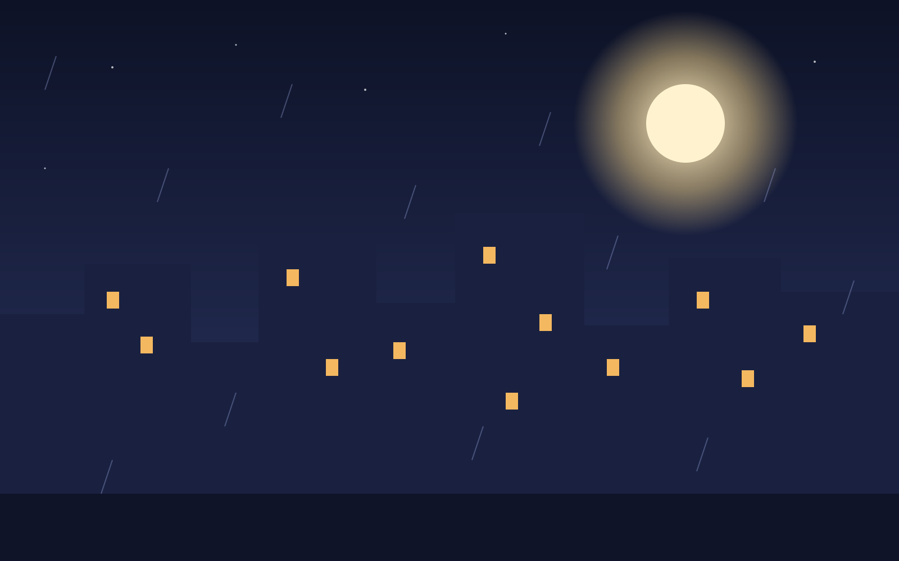
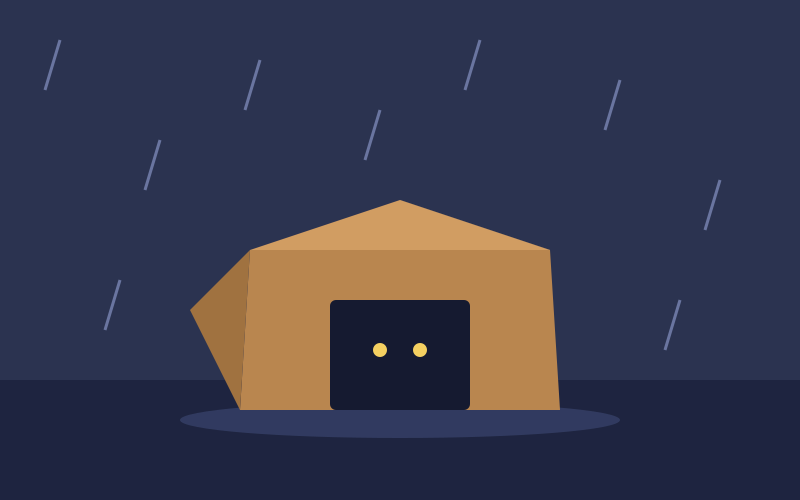
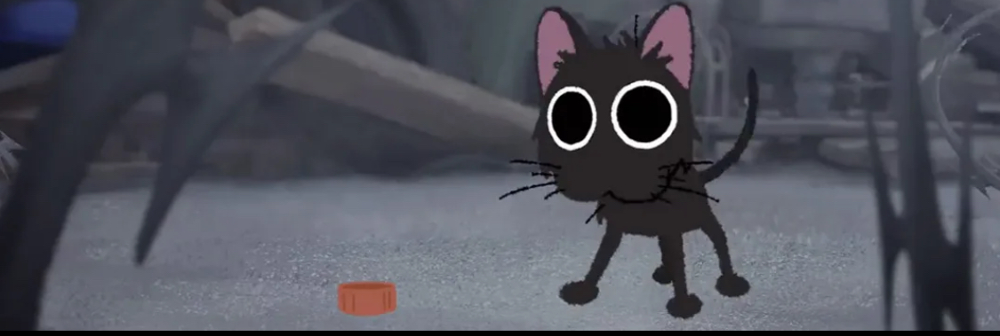
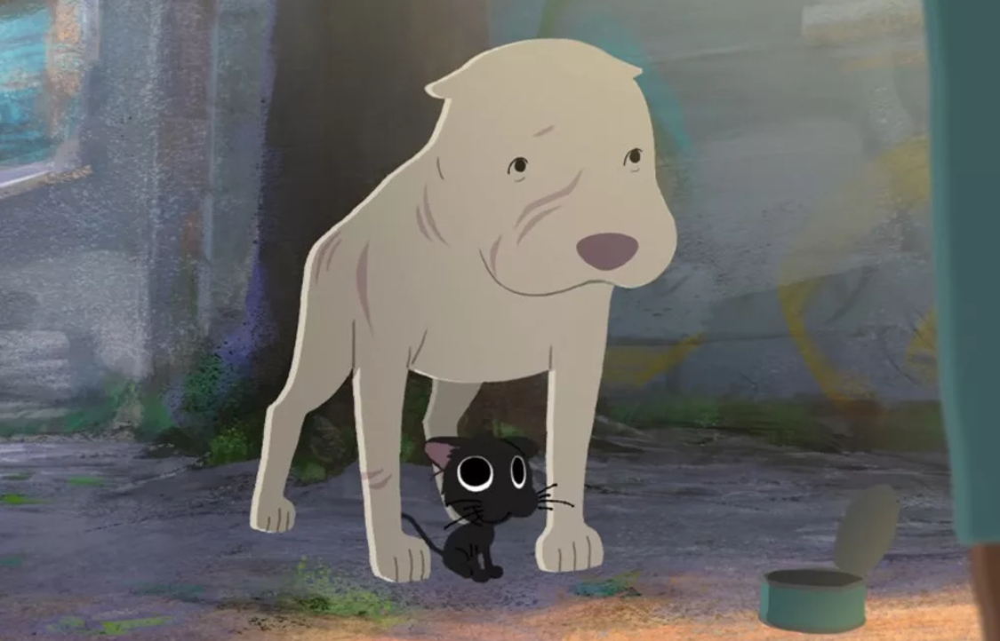
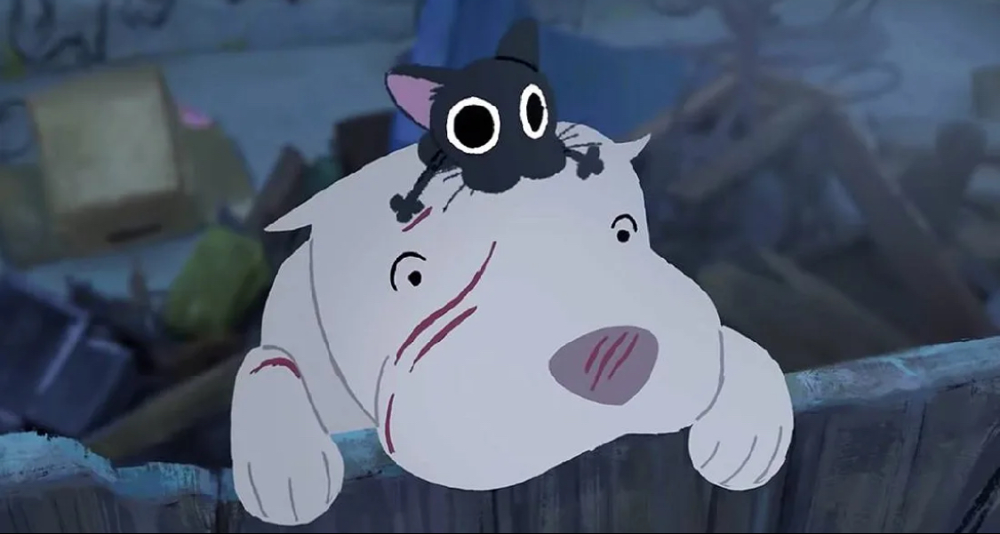
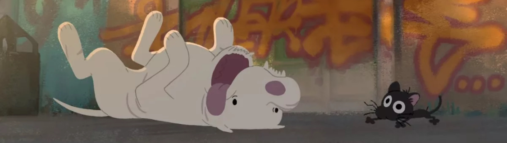
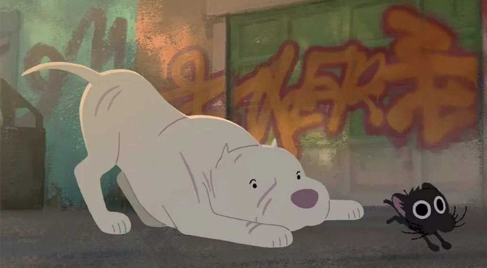
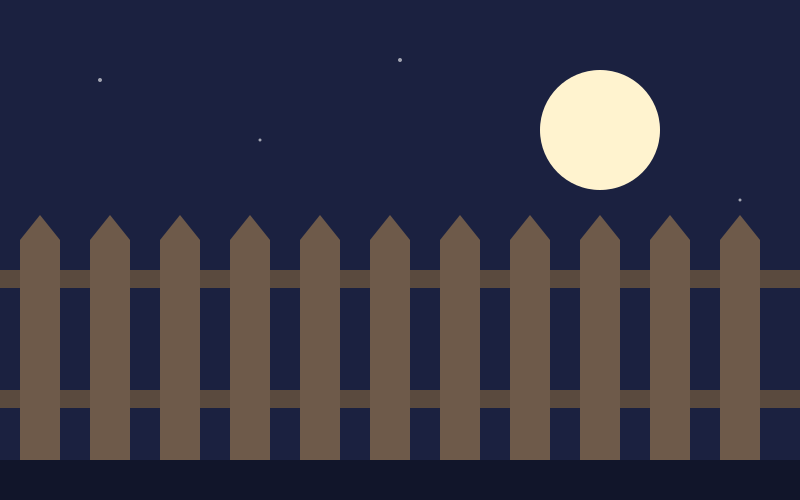

Дружба вопреки различиям
Кошка и собака — «вечные враги», но мультфильм показывает, что внешность и стереотипы ничего не решают. Значение имеет только доброта.

Pixar SparkShorts · 2019 · 9 минут
Короткая история о бездомном котёнке, псе, которого обижали люди, и дружбе, которая начинается со страха.
Смотреть мультфильмМаленький чёрный котёнок живёт один в картонной коробке среди мусора на задворках города. Он дикий, пугливый и никому не доверяет. Однажды по соседству появляется новый жилец — большой пёс породы питбуль, которого держат на цепи. Котёнок шипит и выгибает спину, хотя пёс вовсе не собирается нападать — он просто хочет поиграть.
Постепенно котёнок понимает, что пёс добрый, а его хозяева жестоко обращаются с ним и используют в собачьих боях. Однажды дождливой ночью раненый пёс прячется от людей, и между животными возникает настоящая привязанность. Котёнок решается помочь другу сбежать. Вместе они попадают к доброму человеку, который даёт им дом, и в финале оба счастливо играют на холме, с которого виден весь город.
⚠️ В мультфильме есть сцены жестокого обращения с животными. Он может растрогать до слёз — особенно детей.

Кошка и собака — «вечные враги», но мультфильм показывает, что внешность и стереотипы ничего не решают. Значение имеет только доброта.

Котёнок боится всех, потому что жизнь на улице научила его защищаться. Открыться другому — страшно, но только так можно перестать быть одиноким.
Пса считают опасным из-за породы, а на деле он нежный и ранимый. Жестокими собак делают люди. Мультфильм выступает против собачьих боёв и предубеждений к «страшным» породам.
Финал напоминает о приютах и усыновлении животных: брошенным и обиженным тоже можно подарить новую, счастливую жизнь.
Розана Салливан работала художником раскадровки в Pixar (она трудилась над «Хорошим динозавром», «Коко», «Суперсемейкой 2»). Коллега показал ей ролик, где котёнок выгибает спину, пытаясь выглядеть грозным, — и тут же падает со стола. Розане так понравился этот контраст, что она начала рисовать маленького чёрного котёнка.
Котёнок во многом похож на саму Розану: в детстве она была очень застенчивой. Она любит животных, волонтёрила в приютах и видела, что питбули — ласковые собаки, которых незаслуженно боятся. Финальный холм Бернал-Хилл в Сан-Франциско тоже связан с её жизнью.
Розана и продюсер Кэтрин Хендриксон развивали идею после работы и собирались снять мультфильм сами — за несколько лет до появления программы SparkShorts.
В 2019 году Pixar запустила SparkShorts: сотрудникам дают около шести месяцев и небольшой бюджет, чтобы снять собственный экспериментальный фильм. «Китбуль» стал третьим фильмом программы после «Пёрл» и «Схватить и бежать».
Pixar знаменита 3D-графикой, но «Китбуль» полностью нарисован и раскрашен вручную в 2D. Художники рисовали на компьютере, но каждый кадр шёл прямо из их рук. Персонажей и фоны делали на разных слоях, а потом соединяли. Для живости движений команда собрала плейлист из сотен видео с кошками и собаками. Звукорежиссёр даже добавил шум поездов BART — метро Сан-Франциско.
После выхода на YouTube мультфильм за пару дней набрал миллионы просмотров, а к 2023 году — более 100 миллионов. Его номинировали на «Оскар» как лучший анимационный короткометражный фильм, а в 2024 году показали в кинотеатрах перед мультфильмом «Я краснею».





Рисунки в настроении мультфильма: ночной город, дождь, коробка-домик и холм на рассвете.

Если плеер не загрузился — откройте мультфильм на Rutube.